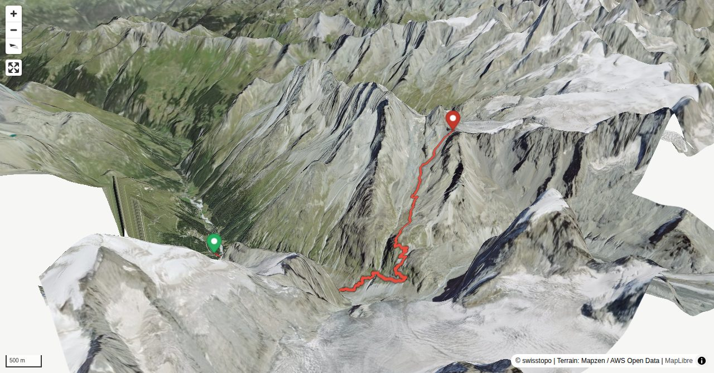

The normal hut approach to Cabane de Bertol becomes increasingly demanding: It leads first comfortably along a road, then steeply through moraine slopes of the Bas Glacier d'Arola up to the Plans de Bertol; from there it follows a white-blue-white alpine hiking path through rubble and yet more rubble, then finally crosses a remnant glacier to gain the Col de Bertol. The last few metres up a rocky spur are exposed, but well equipped with ladders and artifical steps. The approach is truly alpine from Plan Bertol onwards and, depending on the conditions, ice axes and crampons may be necessary.
Depending on the conditions, ice axe and possibly crampons may be necessary before the Col de Bertol (slope around 30° below the Col de Bertol), later in the season on rocky terrain.
Quick Facts
| Summit elevation | 3306 m |
|---|---|
| Difficulty | SAC T4 Alpine hiking with exposure, rougher terrain, and sections that are not suitable for beginners. Guide |
| Trailhead | Arolla, Magine |
| Region | Western Central Alps |
| Canton | Valais |
| Distance | 8.1 km (out-and-back) |
| Total ascent | ~1340 m |
| Elevation range | 1968-3306 m |
| Route sources | SAC Route Portal |
Photos

Approach via a via ferrata which passes the rocks at 3200m.
© Stephane Schenk · 07/2022
Detail approach via a via ferrata which passes the rocks at 3200m.
© Stephane Schenk · 07/2022
The spectacularly postitioned Cabane de Bertol - SAC section Neuchâtel.
© SAC · 08/2003Photos: Stephane Schenk, and SAC — via SAC Route Portal
Planning
i
i
sac_scale (precise T1–T6) with
swissTLM3D Wanderwegart
fallback where OSM is silent (coarser T2/T3 and T4+ buckets).
Coverage: OSM 67.0% · swisstopo 32.3% · unknown 0.0%.Elevations computed from the inlined GPX track (SwissTopo height API).
Loading forecast…
Start: Arolla, Magine (1968 m)
Route returns to Arolla, Magine.
3D Terrain View

Route Details
From Arolla via Plans de Bertol
Terrain & safety
The last part of the ascent is marked with flags, the route changes depending on the conditions and the retreat of the glacier. Depending on the conditions, ice axe and possibly crampons may be necessary before the Col de Bertol (slope around 30° below the Col de Bertol), later in the season on rocky terrain.
Source: SAC Route Portal
Field Reference
| Trailhead | Arolla, Magine | 46.02160, 7.48170 |
|---|---|---|
| Summit | Cabane De Bertol Cas (3306 m) | 46.00607, 7.52771 |
Coordinates are WGS84 decimal degrees (lat, lon). Emergency: 112 (general) or 1414 (Rega air rescue). Page URL: